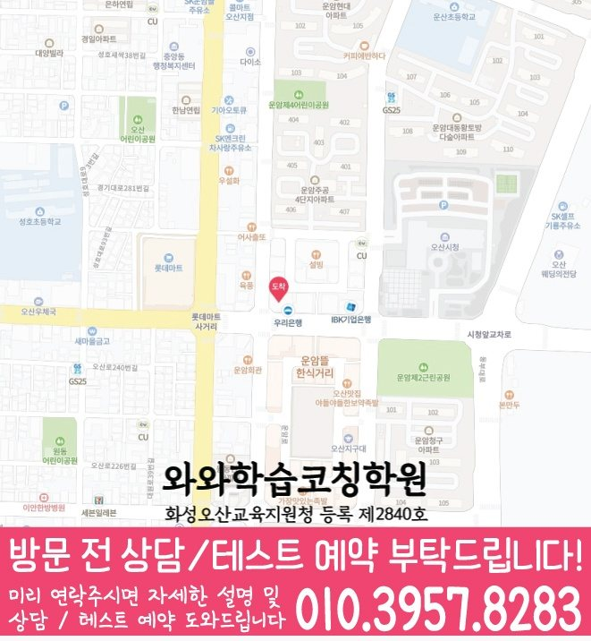

원동 상담에서는 독해력, 어휘 이해, 서술형 표현, 학교 지문 정리가 실제 문제 풀이와 시험 준비로 이어지는지 확인합니다.
☁️ 경기 오산시 원동 국어·영어·수학 학습관리
원동 국영수학원
원동 국영수학원 상담에서 확인할 내용을 담았습니다. 제공된 학교 목록에서 확인된 운천초·성호초와 학생이 가져온 실제 진도표·시험 범위와 과제·오답 기록을 기준으로 세 과목의 관리 순서를 정리합니다.
경기
오산시
국어·영어·수학 집중
초등·중등·고등


Korean English Math Guide
원동 국영수학원, 국어로 읽고 이해하는 힘까지 함께 봐야 세 과목 관리가 선명해집니다.
원동에서 국영수학원을 찾는 학부모님은 보통 “국어까지 함께 봐야 하는지, 영어와 수학만 관리해도 되는지”, “세 과목을 함께 관리해도 되는지”를 고민합니다. 실제로는 과목을 나누기 전에 아이가 공부를 실행하는 방식부터 살펴보는 것이 중요합니다.
국어는 지문을 읽고 조건을 파악하는 힘이 중요하고, 영어는 어휘·문법·독해가 누적되어야 하며, 수학은 개념을 문제에 적용하는 과정에서 오답 원인을 잡아야 합니다. 특히 오답노트를 작성해도 일정 기간 뒤 재풀이가 이어지지 않는 경우라면 진도보다 막힌 단계와 완료 기준을 먼저 구분해야 합니다. 원동 국영수학원 상담에서는 국어 독해와 서술형 표현을 먼저 확인하고, 영어의 누적 학습과 수학의 오답 원인을 함께 점검합니다.
운천초, 성호초, 운산초, 운암중, 운천중, 성호중 등 주변 학교의 진도와 시험 준비 흐름을 상담 때 함께 확인합니다.
원동 학생의 영어 누적 학습과 수학 개념·유형·오답 관리 흐름이 끊기지 않도록 주간 계획 안에서 함께 조정합니다.
원동 학생의 시험 기간에는 국어·영어·수학의 공부량이 한쪽으로 쏠리지 않도록 주간 계획을 조정합니다.
Grade Coaching
원동 국영수학원 학년별 관리 포인트
같은 국영수 수업이라도 초등·중등·고등 단계에 따라 목표가 달라집니다. 현재 학년과 학교 진도, 최근 학습 기록을 함께 보아야 실제 관리 순서를 정할 수 있습니다.
초등 단계에서는 독해력, 어휘 이해, 서술형 표현, 학교 지문 정리를 확인하고, 영어 누적 학습과 수학 개념·유형·오답 관리 흐름이 매일 이어지도록 작은 루틴을 만듭니다. 공부 습관이 잡히는 시기라 짧고 꾸준한 관리가 중요합니다.
학교 시험 범위에 맞춰 국어의 취약 단원과 영어·수학의 누적 과제를 함께 관리합니다. 내신 대비는 시험 직전이 아니라 평소 누적 관리가 핵심입니다.
국어의 점수 변동 원인과 영어·수학의 누적 학습 흐름을 함께 확인합니다. 과목별 우선순위를 잡아 시험 기간 계획이 흔들리지 않게 돕습니다.
Recommended
원동에서 이런 학생이라면 국영수 상담을 권합니다.
국어 지문을 읽어도 핵심을 잘 못 잡는 학생원동 상담에서는 문제 조건, 핵심어, 문단 흐름을 읽는 방법부터 확인해 서술형 답안으로 연결합니다.
영어와 수학도 함께 흔들리는 학생원동 학생의 기록을 기준으로 영어 누적 학습과 수학 오답 관리가 주간 계획 안에서 끊기지 않는지 점검합니다.
학습 기록과 실제 실행이 어긋나는 학생오답노트를 작성해도 일정 기간 뒤 재풀이가 이어지지 않는 경우라면 공부 시간을 늘리기 전에 막힌 단계와 완료 기준부터 다시 정리할 필요가 있습니다.
핵심 안내
원동 국영수학원 핵심 요약
원동에서 국영수 상담 전 확인할 지역 자료, 과목별 우선순위와 실행 상황을 간단히 정리했습니다.
제공된 학교 목록에서 확인된 운천초·성호초와 학생이 가져온 실제 진도표·시험 범위를 현재 교재와 대조해 국어·영어·수학의 시험 준비 위치를 확인합니다.
독해력, 어휘 이해, 서술형 표현, 학교 지문 정리 중 학생이 혼자 설명하고 다시 풀 수 있는 범위를 구분합니다.
오답노트를 작성해도 일정 기간 뒤 재풀이가 이어지지 않는 경우인지 확인하고 영어·수학 복습과 플래너의 완료 기준을 조정합니다.
바로 확인
원동 국영수학원을 고를 때 무엇을 먼저 확인해야 할까요?
원동 국영수학원 상담에서는 국어·영어·수학을 한 묶음으로 판단하지 않습니다. 국어와 영어·수학에서 학생이 혼자 해내는 단계와 멈추는 단계를 각각 나눕니다.
제공된 학교 목록에서 확인된 운천초·성호초와 학생이 가져온 실제 진도표·시험 범위와 최근 시험지·현재 교재를 확인한 뒤 오답노트를 작성해도 일정 기간 뒤 재풀이가 이어지지 않는 경우인지 살펴봅니다. 확인된 기록을 기준으로 복습, 오답 재풀이, 다음 진도의 순서를 정하며 확인되지 않은 학교 정보는 임의로 만들지 않습니다.
Evidence Based
원동 국영수학원 선택을 기록으로 판단하기
원동 국영수학원을 비교할 때는 홍보 문구보다 진단 절차를 살펴보는 것이 안전합니다. 경기 오산시 원동 학생의 현재 단원과 학습 습관을 기록으로 확인하고, 그 결과가 다음 주 계획으로 이어지는지가 핵심 기준입니다.
원동 관련 사실은 센터정보 자료에서 확인된 와와학습코칭센터 오산점에서 확인되는 내용에 한정했습니다. 학습 범위 역시 제공된 학교 목록에서 확인된 운천초·성호초와 학생이 가져온 실제 진도표·시험 범위를 토대로 점검하며, 자료가 없는 부분은 추측하지 않고 상담 시 재학 학교와 현재 진도를 다시 확인합니다.
Learning Flow
진단에서 오답 재학습까지 연결하는 방법
원동 학생에게 오답노트를 작성해도 일정 기간 뒤 재풀이가 이어지지 않는 경우가 나타날 경우 현재 진도와 복습을 무조건 동시에 늘리지 않습니다. 시험 일정과 남은 범위를 확인한 뒤, 회복할 공백과 유지할 학습을 서로 다른 칸으로 관리합니다.
국어는 ‘안다’는 대답보다 독해력, 어휘 이해, 서술형 표현, 학교 지문 정리를 혼자 수행할 수 있는지로 판단합니다. 영어·수학은 영어 누적 학습과 수학 개념·유형·오답 관리의 최근 기록을 확인해 복습이 특정 시기에만 몰리지 않는지도 살펴봅니다.
실행 확인은 ‘했는가’ 한마디로 끝내지 않습니다. 원동 국영수학원에서는 학생이 풀이 과정을 설명할 수 있는지, 같은 유형을 다시 풀 수 있는지, 플래너의 완료 표시와 결과가 일치하는지 차례로 봅니다.
Parent Questions
결과 약속보다 관리 과정을 확인하세요
상담 후 확인할 변화는 단기간의 점수 약속이 아닙니다. 원동 학생이 해야 할 일을 더 구체적으로 말하는지, 질문을 미루지 않는지, 오답 재확인 날짜를 지키는지처럼 관찰 가능한 행동으로 판단해야 합니다.
Local Fit
원동 국영수학원 지역·학년·추천학생 기준
지역 기준
경기 오산시 원동 학생이 상담 전 확인하기 쉽도록 지도, 학교 진도 확인 항목, 상담 기준을 함께 정리했습니다.
학년 기준
초등은 기본기와 습관, 중등은 내신 범위와 서술형, 고등은 시험 전략과 취약 유형을 중심으로 봅니다.
추천 학생
오답노트를 작성해도 일정 기간 뒤 재풀이가 이어지지 않는 경우라면 국어·영어·수학 한 과목의 문제로만 보지 않고 공부 실행 루틴 전체를 함께 점검합니다.
Target Schools
원동 국영수학원 수업 가능 학교 안내
원동 주변 학생들이 상담 전 확인하기 쉽도록, 현재 정리된 학교 목록을 학년 단계별로 나누어 담았습니다.
운천초
성호초
운산초
운암중
운천중
성호중
운암고
운천고
학교별 교과 진도, 시험 범위, 수행평가 준비 상황은 학생마다 다르기 때문에 상담 시 현재 교재와 최근 평가지를 함께 확인하면 더 정확한 학습 계획을 세울 수 있습니다.
Center Information
원동 국영수학원 센터 기준 정보
와와학습코칭센터 오산점 기준으로 원동 학생 상담 흐름을 정리했습니다. 주소 자료는 상담 전 위치와 생활권을 확인하기 위한 참고 정보로 활용됩니다.
주소: 경기 오산시 성호대로 121 월드타워 505호
운영 시간: 12시-24시 · 상담은 학생 상황 확인 후 안내됩니다.
Checklist
원동 국영수학원 상담 전 체크리스트
원동 국영수학원 국어 확인 자료: 현재 교재, 최근 시험지, 반복해서 막히는 단원
원동 영어·수학 확인 자료: 과제 기록, 오답 재풀이 여부, 다음 진도 준비 상태
학교별 확인 자료: 제공된 학교 목록에서 확인된 운천초·성호초와 학생이 가져온 실제 진도표·시험 범위
오답노트를 작성해도 일정 기간 뒤 재풀이가 이어지지 않는 경우에 해당하는지 보여주는 플래너와 최근 실행 기록
FAQ
원동 국영수학원 자주 묻는 질문
학교 진도와 원동 국영수학원 학습 계획은 어떻게 맞추나요?
제공된 학교 자료와 학생이 가져온 실제 진도표를 기준으로 시험 범위와 복습 시기를 확인합니다. 확인되지 않은 학교 일정은 임의로 가정하지 않고 상담 시점의 자료에 맞춰 계획을 조정합니다.
원동 국영수학원은 어떤 학생에게 도움이 될 수 있나요?
국어·영어·수학 공부를 시작하지만 과제·복습·오답 확인이 서로 이어지지 않거나, 한 과목의 부담 때문에 다른 과목 계획까지 자주 밀리는 학생이라면 상담에서 현재 실행 흐름을 점검해볼 수 있습니다.
원동 국영수학원에서는 국어·영어·수학을 함께 관리하나요?
함께 살펴보되 같은 방식으로 묶지는 않습니다. 국어는 독해력, 어휘 이해, 서술형 표현, 학교 지문 정리를 기준으로, 영어·수학은 영어 누적 학습과 수학 개념·유형·오답 관리를 기준으로 각각 확인한 뒤 학년과 학교 진도에 맞춰 우선순위를 정합니다.
원동 국영수학원을 알아볼 때 두 과목을 함께 공부할 때 우선순위는 어떻게 정하나요?
최근 시험지와 학교 진도, 누적 과제, 반복 오답을 과목별로 나눈 뒤 시험 범위와 남은 기간에 맞춰 먼저 보완할 단계를 정합니다. 원동 국영수학원의 실제 적용 범위는 학생의 학년과 현재 학교 진도, 상담 시 확인한 자료에 따라 달라질 수 있습니다.
원동 국영수학원에서 상담 전에 어떤 자료를 준비하면 좋나요?
최근 시험지, 현재 교재, 학교 진도표, 반복해서 틀린 문제처럼 학생의 현재 상태를 보여주는 자료부터 준비하면 됩니다. 자료가 모두 없어도 확인 가능한 기록부터 상담할 수 있습니다. 원동 국영수학원의 실제 적용 범위는 학생의 학년과 현재 학교 진도, 상담 시 확인한 자료에 따라 달라질 수 있습니다.
상담 참고
원동 상담 시 확인할 국영수 학습 변화
원동 국영수학원 안내는 성적 결과를 미리 약속하지 않습니다. 질문 빈도, 과제 착수, 오답 재풀이처럼 관찰 가능한 학습 행동을 상담에서 확인합니다.
과제를 했는지만 묻기보다 국어에서 막힌 단계와 다시 풀어본 기록을 확인해야 다음 계획을 구체적으로 조정할 수 있습니다.
원동 국영수학원 상담에서는 틀린 문제를 개념 공백, 적용 순서, 계산·표현 실수로 나누어 기록해 같은 실수가 반복되는 이유를 확인합니다.
다른 지역 안내
원동 주변 국영수학원도 함께 보기
같은 시군구와 가까운 지역의 국영수 상담 페이지로 자연스럽게 이동할 수 있게 정리했습니다.
Page Route
원동 페이지 이동
현재 페이지와 연결된 상위 페이지를 빠르게 확인할 수 있습니다.